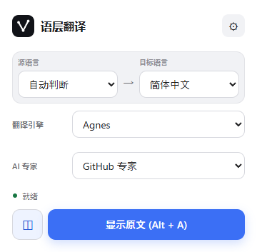
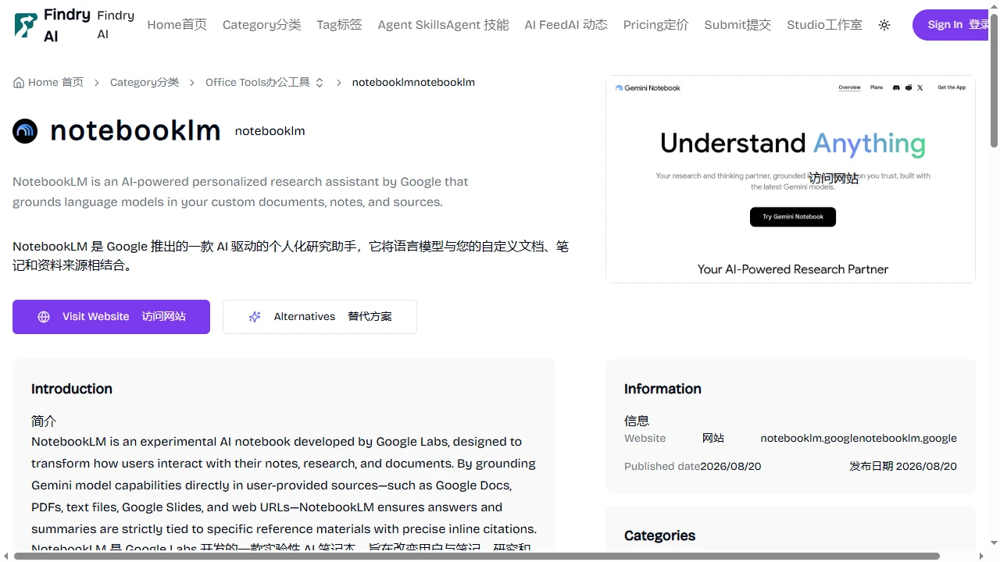
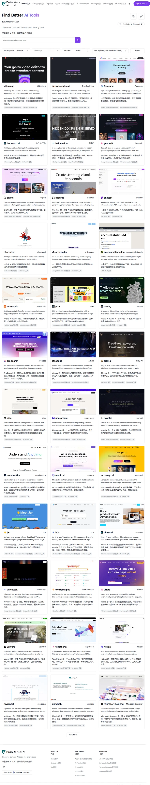
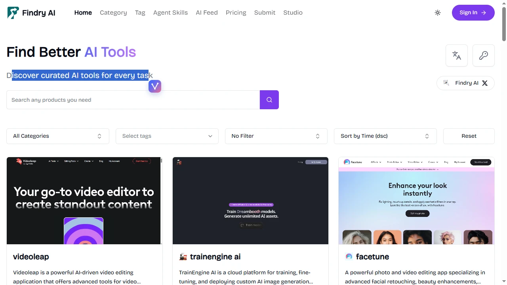
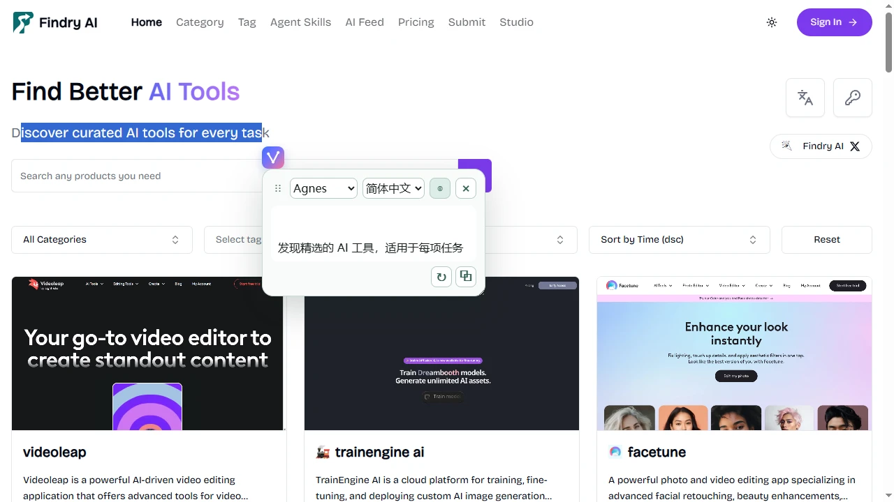
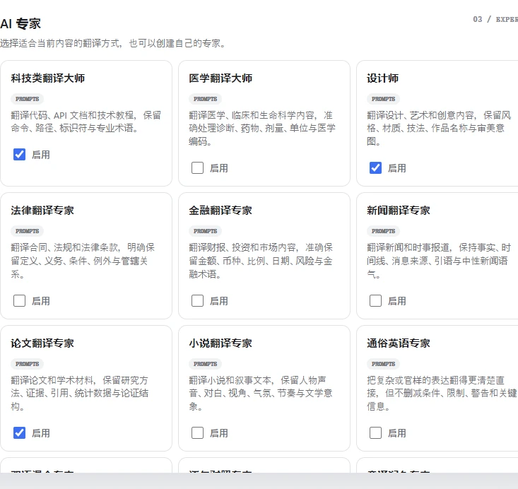
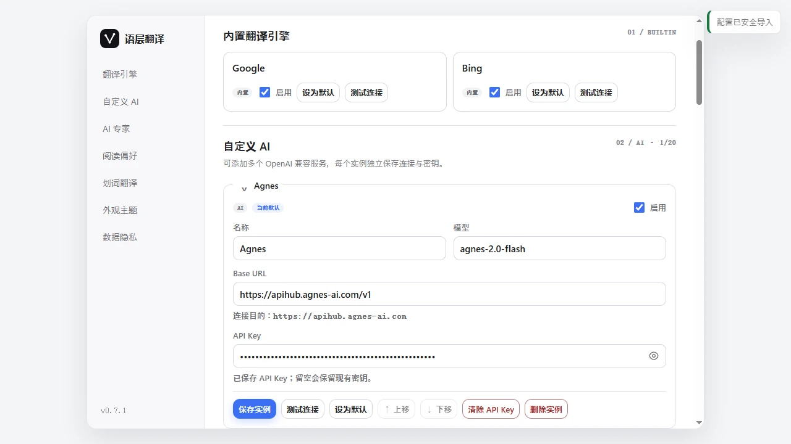

为网页阅读而生的翻译层
翻译引擎负责「说另一种语言」，AI 专家提示词负责「理解这段内容应该怎样被翻译」。两者自由组合，适配你的每一次阅读。
网页翻译
一键翻译网页主要内容或整页，译文直接渲染在当前页面，随时一键还原原文。
双语对照阅读
支持双语对照与仅译文两种显示模式，译文可显示在原文之前或之后。
划词翻译
选中网页文字后，通过 V 形入口打开独立翻译面板，互不干扰页面本身。
AI 专家翻译
29 个内置领域专家：技术文档、论文、法律、金融、新闻、本地化……也支持自定义专家。
多引擎支持
Google 默认、Bing 备用，均可免费用；还可添加最多 20 个 OpenAI 兼容 AI 实例。
流式划词结果
自定义 AI 划词翻译优先使用流式响应，边生成边显示，体验更流畅。
现代网页适配
优先处理可见文本，支持 React、Vue、Angular、Web Component 与动态新增内容。
本地缓存
译文保存在浏览器本地 IndexedDB，默认保留 30 天、最多 5000 条，可随时清理。
快捷键与双语界面
使用 Alt + A 切换当前页面翻译；界面提供简体中文与英文。
把语层翻译装进浏览器
适用于 Chrome 以及 Edge 等较新版本的 Chromium 内核浏览器，全程无需注册账号。
Chrome Web Store
语层翻译正在准备 Chrome Web Store 上架审核。上架后，你将可以直接从应用商店一键安装并自动获得更新。
下载发布包
- 点击上方按钮下载
lexilayer-translator-0.7.1-chrome-web-store.zip（或前往 GitHub Releases 页面，同名.sha256文件可用于校验），并解压。 - 打开
chrome://extensions，开启右上角「开发者模式」。 - 点击「加载已解压的扩展程序」，选择解压后的文件夹。
从源码构建
- 克隆仓库，安装 Node.js 20 或更高版本。
- 执行
npm install与npm run build。 - 在
chrome://extensions中以开发者模式加载dist/目录。
三步开始双语阅读
不需要任何配置，使用内置的 Google 引擎即可立即翻译网页。
- 固定扩展。安装后，在工具栏拼图菜单中把「语层翻译」固定到工具栏。
- 打开控制弹窗。进入任意想阅读的网页，点击工具栏中的语层翻译图标。语层翻译只有在你主动发起后才会扫描页面内容。
- 开始翻译。确认源语言（默认自动判断）与目标语言（默认简体中文），点击「翻译当前页面」，译文会直接显示在页面原文旁。

整页双语阅读
语层翻译会优先翻译你正在阅读的可见正文，并持续适配 React、Vue、Angular 等现代网页动态加载的内容。
| 弹窗控件 | 说明 |
|---|---|
| 源语言 / 目标语言 | 源语言默认「自动判断」，目标语言默认简体中文，可自由组合。 |
| 翻译引擎 | 选择本次使用的引擎：Google、Bing 或已配置的自定义 AI 实例。 |
| AI 专家 | 使用自定义 AI 时可选领域专家，让翻译贴合内容的领域与风格。 |
| 状态 | 实时显示「就绪」或「翻译中 x/y」进度，长页面可随时观察进展。 |
| 显示模式 | 双语对照 / 仅译文一键切换；还可在设置中把译文调整为显示在原文之前或之后。 |
| 主按钮 | 「翻译当前页面」开始翻译；翻译后变为「显示原文 Alt + A」，一键还原。 |


选中即译，不离开当前页面
只需要翻译一段文字时，划词翻译最快：它只处理你主动选择的文字，其余内容一动不动。
- 选中文字。用鼠标选中想翻译的内容，选区旁会出现 V 形入口图标。
- 打开翻译面板。点击 V 形图标，弹出独立的翻译面板，默认使用当前默认引擎与目标语言。
- 按需调整。面板内可即时切换翻译引擎与目标语言，重新翻译；支持一键复制结果。


让 AI 懂得「这段内容该怎么翻译」
AI 专家是一组经过领域调校的提示词。配置自定义 AI 后，为不同阅读场景选择不同专家，术语、语气、受众和格式都会更贴合内容本身。

🧩 自定义专家
在「AI 专家」页新建自定义专家：写好名称与提示词，即可像内置专家一样启用、编辑、停用和删除。
🎯 按实例记忆
每个自定义 AI 实例会分别记住你上一次选择的专家，切换实例时无需反复设置。
📴 离线快照
内置专家由版本化离线快照提供，扩展运行时不会访问 GitHub，保证隐私与稳定性。
翻译引擎与自定义 AI 配置
在扩展「设置页」（弹窗右上角齿轮图标进入）中管理引擎、专家、偏好与数据。
| 引擎 | 用途 | 特点 |
|---|---|---|
| 默认引擎 | 免费、无需 API Key，适合日常快速翻译。 | |
| Bing | 备用引擎 | 免费、无需 API Key，Google 不可用时的稳妥选择。 |
| 自定义 AI | 专家级翻译 | OpenAI 兼容 API，模型与提示词可配置，最多添加 20 个实例。 |
添加一个自定义 AI 实例
- 打开设置页，进入「自定义 AI」，点击「新增自定义 AI」。
- 填写名称、模型、Base URL 与 API Key，然后点击「保存实例」。
- 点击「测试连接」确认服务可达，再点击「设为默认」，即可在弹窗与划词面板中使用。
Base URL: https://api.openai.com/v1
模型: gpt-4o-mini
API Key: sk-...本机 OpenAI 兼容服务也可用，例如 Ollama：http://127.0.0.1:11434/v1

设置页功能地图
你的数据停留在哪里
语层翻译不创建账号、不投放广告、不做跨站追踪，也没有接收翻译内容的自营服务器。
🔑 API Key 只留在本机
API Key 仅保存在浏览器的 chrome.storage.local 中，不会发送给网页或内容脚本，也不会出现在错误信息里；导出配置文件默认不包含 API Key，只有你明确确认后才会写入。
👆 只在你发起时工作
只有当你主动发起页面翻译后，扩展才会扫描正文；划词翻译只处理你主动选择的文字。平时浏览完全静默。
💾 缓存仅存本地
成功的译文保存在本地 IndexedDB，默认保留 30 天、最多 5000 条，可在设置页「数据隐私」中一键清理。
🔒 连接安全
自定义 AI 服务必须使用 HTTPS；仅本机回环地址（如 127.0.0.1）允许 HTTP，方便本地大模型。
FAQ
点击「翻译当前页面」没有反应怎么办？
先看弹窗中的状态提示：如果当前网络环境访问 Google 受限，请在设置页启用 Bing 或配置一个自定义 AI 实例并设为默认；然后刷新页面重新发起翻译。
Google 和 Bing 会自动互相切换吗？
不会。语层翻译不会自动降级：你选择哪个引擎，就只使用哪个引擎，避免结果不可预期。需要切换时在弹窗或设置页手动选择即可。
AI 专家为什么没有生效？
专家提示词只对自定义 AI 生效。请先在「自定义 AI」中添加实例并设为默认，再在设置页「AI 专家」或弹窗中选择专家；使用 Google / Bing 时专家不参与翻译。
我的 API Key 安全吗？
API Key 仅保存在本机 chrome.storage.local，不会发送给网页、不写入错误信息；配置导出默认不含 API Key，只有你明确确认后才写入导出文件。
翻译记录保存在哪里？如何清理？
成功译文保存在浏览器本地 IndexedDB，默认保留 30 天、最多 5000 条，到期或超限自动淘汰。打开设置页「数据隐私」可随时手动清理缓存。
为什么有些内容没有被翻译？
语层翻译只处理可见正文，会跳过密码框、输入框等交互控件和图标类内容；未主动发起翻译的页面不会被扫描。动态加载的内容（如无限滚动）会在出现后自动纳入翻译。
快捷键 Alt + A 无效怎么办？
可能被其他扩展或应用占用。打开 chrome://extensions/shortcuts，找到「语层翻译」重新指定快捷键即可。
支持哪些浏览器？
目前支持 Chrome 与 Edge 等较新版本的 Chromium 内核浏览器（Manifest V3）。Firefox 与 Safari 暂未适配。